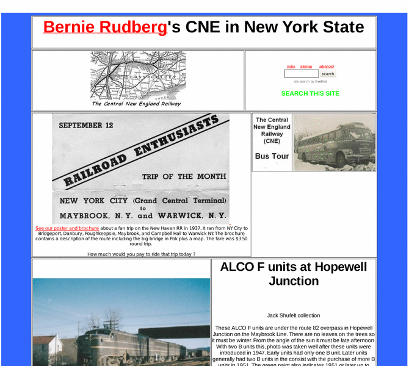

Previewing: Central New England Railway in New York State Previewing: Central New England Railway in New York State 
Use the left/right red arrow controls to navigate through this ring - Click the preview image to visit the member site.

The Central New England Railway (CNE) came from northern Connecticut and west across the Hudson River in New York to Maybrook. It crossed the great bridge at Poughkeepsie. It later became part of the New York, New Haven and Hartford Railroad. It is no more, but it has left a lot of fans.
Central New England Railway in New York State owned by:
 king5021 king5021
A member of the original webring since 01/27/2011.
|
|